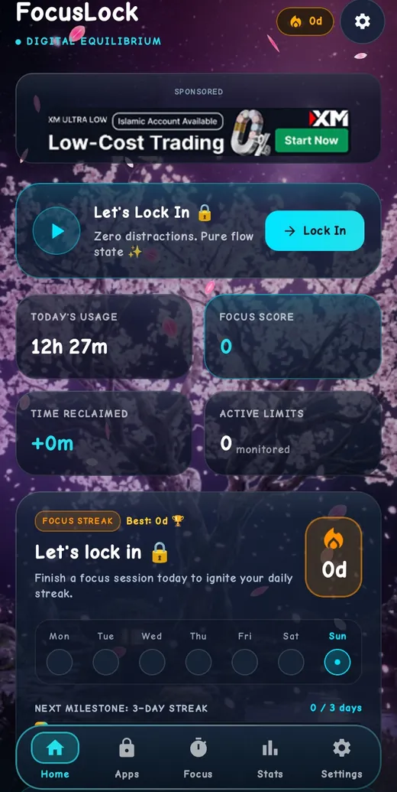
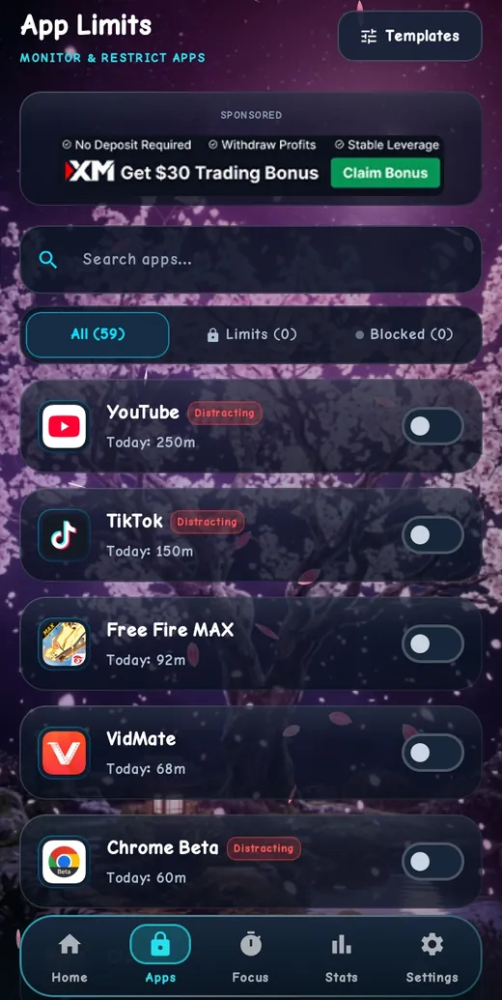
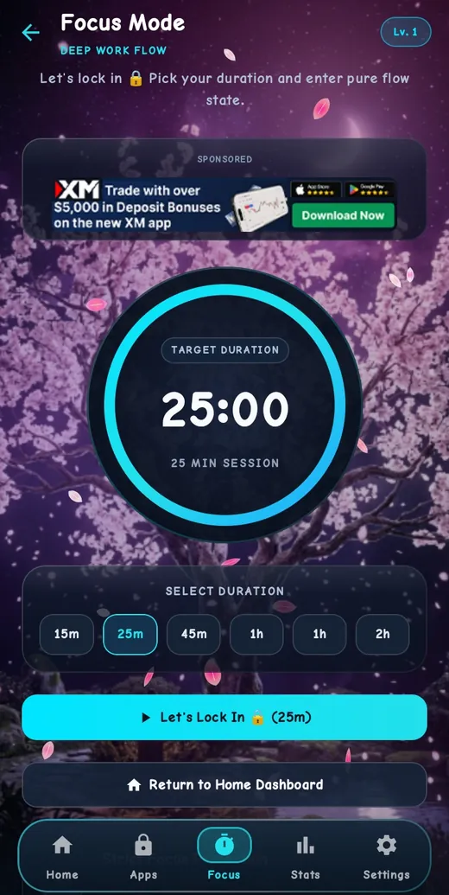
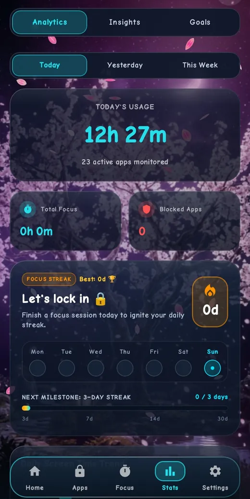
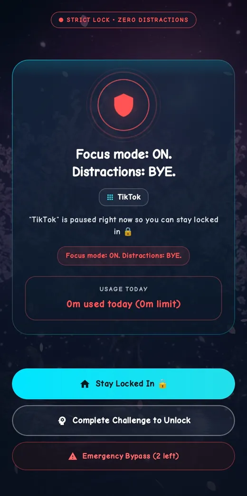
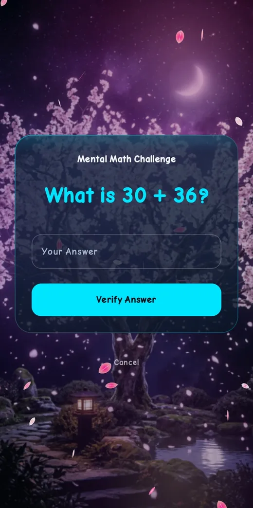
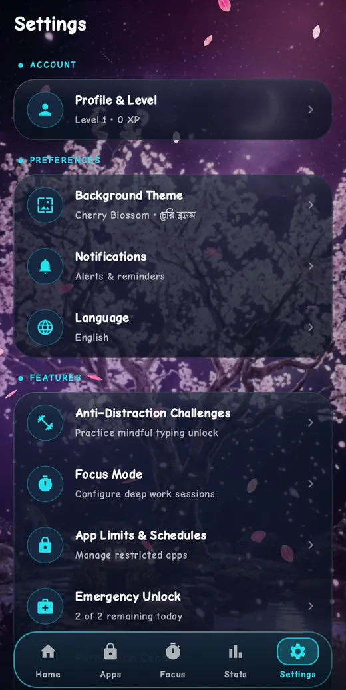
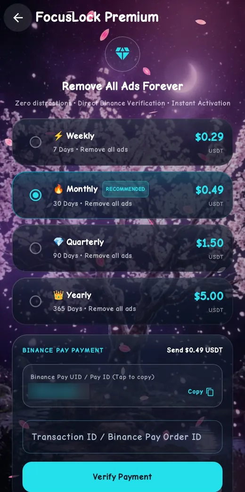

App tour
Tour the app
From picking apps to unlocking with a challenge. These are real screens from FocusLock.
Step 1
Home
Your day at a glance
The Home screen shows today's usage, your Focus Score, time reclaimed, active limits and your streak. A banner tells you if a permission is missing.

Step 2
Choose apps and set limits
Pick what to control
Open Apps, find an app, and switch it on. Set how long you want to allow each day.

Step 3
Focus mode
Lock in for a session
Choose 15 minutes to 2 hours. Distracting apps stay blocked until the timer ends.

Step 4
Track your time
See the trend
Stats shows today's usage, focus time, blocked apps, your streak and the daily trend. Insights and Goals are one tap away.

Step 5
The block screen
When time is up
FocusLock covers the app. Stay locked in, complete a challenge, or use an emergency bypass.

Step 6
Unlock challenges
Earn extra time on purpose
Solve a math question, wait out a countdown, or type a sentence exactly.

Step 7
Settings and themes
Make it yours
Pick an animated theme, change language, manage notifications and Focus mode, and see your emergency bypasses.

Step 8
Premium
Remove the ads
Choose a plan, pay with Binance Pay and enter the transaction ID. Premium removes ads.
